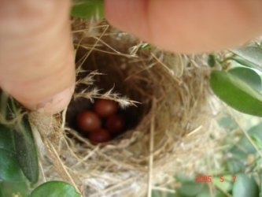
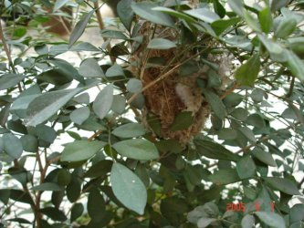

Sucha's Blog ~ Archives for May, 2005
工大特点～～
今天晚自习回来的时候碰到了刚去自习的兄弟，想来也好笑，他们关灯前在寝室，然后九十点才出来上自习。要是宿舍通宵供电，就不用这么麻烦了……不过，怎么说都一样，学期末总是最忙的。
BTW，为了照顾 FVWM，最后 export LANG=en_US.UTF-8 了，只有这样 FVWM 才不崩溃，才找得到可用的字体信息。哎，真烦啊～
LANG=zh_CN.UTF-8
到今天中午为止，终于可以说系统完成了初步的 utf-8 设置。现在这个页面的 charset 就是 utf-8 的……折腾了这么久，感觉从 gb2312 到 utf-8 真是一条蛮累人的路。
不知道是不是自己的原因，觉得改 locale 是一件很复杂的事情，一方面没有很好的 unicode 中文字体（最重要的原因）。另一方面因为使用的是 fvwm，总感觉要改动的东西太多了，而且它在我这里非常不稳定，经常有说找不到 GB2312 和 gbk 的 encoding 而无法进入（i don't know why）。
当我用 mkfontscale 时会缺乏 gb2312 和 gbk 的 encoding。相反，如果我用 ttmkfdir， 则很多字体缺少 iso10646 的 encoding。所以我不得自己动手，先 ttmkfdir，得到gb2312 和 gbk 的 encoding，然后用 mkfontscale 生成，最后把 gb2312 和 gbk 的注入（注意，要修改 font.scale 顶部的条目信息）……另外还有一个，就是 emacs，这个东西无法割舍，不管 locale 是什么，都肯定得用下去的，所以还得看看 emacs 的表现如何。
但很不爽的事情是，emacs 在 X11 下工作得很不稳定，总是找不到 usable fonts，反应得很慢，我一时还不懂设置。而且不知道为什么，它和 fcitx 配合得很不好，如果emacs 启动了，再启动 fcitx，emacs 就会崩溃……所以我不得不用了 scim，顺便也可以输入繁体、日文韩文等等。
可以猜到我现在是用的是终端下的 emacs。方便显示，同时也为能使用这个输入法。不过，为此的代价是，很多的key-binding 用不了，因为 emacs 对键盘的控制已经被终端剥夺了……
说了很多废话，丧气话。还是看看有什么好的收获吧。看看你的系统能否认出下面的字体（我胡乱敲打的，仅仅作为例子）：
韩文：뉘兀뉘뉘뮈일ol뉘쥐뉘튀쥬좨
日文：をでどあみど発海だだだ
scim 还支持很多的文字，比如阿拉伯文字等等，不想费时间打上去了。还有，如果你也要面临着 gb2312 或 gbk 到 utf-8 的或别的编码的转换，试一下下面的两个软件：
- iconv: 转换文件内容编码
- convmv: 转换文件名编码
关于支持 unicode 的字体，我也没有什么好的办法，:(
唉, 最后还是 GBK
改 locale 牵扯的东西太多了，比如 X11 下的字体，比如原来建立和保存的文本文件，还有一些支持的软件。尝试使用了 gb18030，发现要改动的东西太多，现在都没有准备好，还是算了吧，用 gbk 平滑升级算了，:(
Emacs 22.0.50
今天有时间，本想 cvs 的，但还是没有成功，猜想也许跟学校封锁的端口有关，正在犯愁。没想到竟从一个个人 blog 里搜到了一个不错的个人网站，题目虽然是教授如何在 windows 下编译 emacs，但也提供 cvs 的 emacs 源代码。于是迫不及待地下载，$configure、$make、#make install，立马就可以使用，实在是太爽了。这里下载。
新版本的 emacs 支持 utf-8，并且使用了 gtk2.0 作为界面，不过对我来说没有什么变化，自从我了解了 toolbar 和 menu，就再没使用它们。最感兴趣的还是对 utf-8 的支持。
现在我的 locale 是 zh_CN.GB2312，但这也不是长久的办法。本想使用 utf-8 的，但尝试了一下，觉得不妥，因为以前用 gb2312 编码的东西，就等于都丢了，而且现在系统对 zh_CN.UTF-8 的支持不好。看看有什么办法升级到 zh_CN.GB18030，不想尝试使用 gbk 了。
微软"万圣节备忘录"事件
今晚像平常一样打开 Opera 看网路上的 blog，开了太多的 tab，忘记在谁那里找到的了。从这个文件可以看看微软的野心，只是事情发生得有点久了……
微软万圣节备忘录是 1998 年 10 月由微软内部所外泄的文件，在万圣节后，
造成媒体及业界相当程度的震憾.文件明白的指出,微软在未来对今年来风起
云涌的开放原始码界的战略, 读本文可一窥微软这家公司在对付对手的手段,
或多或少, 也可以了解到, 何以美国司法部门要控诉微软.
文章有点长，请在这里查看。文章应该是由一位台湾人翻译的，读起来有点别扭。但里面加了蛮多的注释，应该有助于理解。
学校封了1080(?)以上的端口，现在 IRC channel 根本连不上去，真是郁闷。在学校封了端口之后，室友找到了一个通过 80 端口的代理服务器软件，其实就是专门用来砍网游的，最后学校的策略更本不起作用，倒害苦了我们这些平民百姓，惨~
天啊，鸟窝事件上报了……
今晚上自习前老妈来了电话，兴冲冲地跟我讲，说家门口的鸟窝上报了。要不是因为关了机，我早就迫不及待地观看了。最后还是拖到了晚上，不过，确实很惊喜诶……
一个 Emacs 的日记本函数
在电脑下工作，写程序，调试程序，偶尔总会想写点什么，可是这些东西又不好发表，只是心理面的一点点想法，所以很想把它记录下来，怕以后会遗忘，就象日记一样。
真希望 Emacs 能提供这样的东西，就象随身携带的日记本一样，可以随时写下点什么。可是 Emacs 自带的 diary 和 todo 都不尽如人意，使用也不算方便。到 google 找吧，可是现在流行的早已是功能强大的诸如 EmacsWiki 和 PlanMode 这样复杂的软件，Wiki 的语法、发布成为 html 或直接与 blog 联接上传的功能对我来说没什么吸引力，因为我只是想要一个日记本，本地的日记本，按月分类，随时插入新的条目，很简单的功能。
于是在对 elisp 不怎么了解的情况下，我硬是生搬硬套 emacs-wiki-jounal 的源代码，加上自己笨拙的技巧，写了一个感觉蛮好用的函数，暂且叫它 sucha-simple-jounal 吧~
雏鸟出生
其实昨天雏鸟就已经出生了，只不过昨天的照片实在是太模糊，看了眼睛发疼。今天老爸照得清晰多了。第一次看到这么小的雏鸟，还是刚出生的。

Emacs TAGS 设置
本来不想用 TAGS 的，但 semantic 等工具对我来说太难设置了，而且我现阶段也不需要那么专业的工具，所以还是回到 TAGS 的怀抱吧。下面的设置都是在 Linuxforum 的 GNU Emacs/XEmacs 板快偷学的，在此谢过了~
在工程主目录下生成 TAGS 文件用以下命令(adong 提供):
find -name "*.[cSh]" | xargs etags -a
一小段代码，方便 TAGS 的使用(zslevin 提供):
;; M-. 在另一窗口处查看光标处的 tag
;; M-, 查找光标处的 tag，并跳转
;; C-M-, 提示要查找的 tag，并跳转
(global-set-key [(meta .)] '(lambda () (interactive) (lev/find-tag t)))
(global-set-key [(meta ,)] 'lev/find-tag)
(global-set-key (kbd "C-M-,") 'find-tag)
(defun lev/find-tag (&optional show-only)
"Show tag in other window with no prompt in minibuf."
(interactive)
(let ((default (funcall (or find-tag-default-function
(get major-mode 'find-tag-default-function)
'find-tag-default))))
(if show-only
(progn (find-tag-other-window default)
(shrink-window (- (window-height) 12)) ;; 限制为 12 行
(recenter 1)
(other-window 1))
(find-tag default))))
关于 etags 的更多的配置，M-x customize-group，然后输入 etags。good luck~
循环"包涵于"递归？
不清楚老师有这样说过没，我上课分心比较严重，一般比较有意思的问题，我才会注意，:) 这几天一直在看书，想起了上面的问题。在我看来，循环可以做的一切事情，都可以用递归来完成。以前只是听说，今天才认真想通。
如下的例子，普通的 for 和 while 循环：
for( i=0; i<n; i++)
{
LOOP BODY
}
相当于如下的尾递归：
_for(int i)
{
if(i<n)
{
LOOP BODY
_for(i+1);
}
}
因此 while 循环就更不在话下。不过相反地，用循环来完成递归的功能就麻烦多了，有些甚至于不可能。
递归--程序设计的方法与艺术 ?
最近做了一些数据结构的实验习题，才发觉程序设计就象老师曾说过的那样，是一种方法和艺术，不像我以前想的那么简单……
举几个例子，求二叉树的高度：
- 我写的程序， 返回传递的最大值
int max( int &n1, int &n2)
{
return (n1>n2)?n1:n2;
}
求二叉树高度，用一个整形 left 计算并存储左子树高度，right 计算并存储右子树高度，
void bitre_hight( bitre t, int &left, int &right)
{
if(t!=NULL)
{
visite_bnode(t,1);
if(t->lchild!=NULL)
bitre_hight( t->lchild, left++, right);
if(t->rchild!=NULL)
bitre_hight( t->rchild, left, right++);
}
}
输出左右子树高度最大者
void main()
{
int left=1, right=1;
bitre_hight( t, left, right);
printf("the max floor is: %d", max( left, right));
}
- 老师的例子程序， 返回传递的最大值
int max( int &n1, int &n2)
{
return (n1>n2)?n1:n2;
}
返回这一层的高度加上左右子树的高度最大者
int bitre_hight(bitre t)
{
if(t!=NULL)
{
visite_bnode(t,1);
return (max(bitre_hight(t->lchild), bitre_hight(t->rchild)) + 1);
}
}
两个程序虽然都能得到同样的结果，但是其求解思想千差万别。
我的求解思想，是通过用两个整形变量计算并存储左右子树的值，最后输出最大值。变量存储，控制机制，呵呵。而老师的思想，就比较精简了，用递归嘛，“方法要统一”。 这一层的高度加上左右子树高度最大者为二叉树的高度 。
大脑的性别
最近逛 Zhaoway 的 blog，发现了一个很有意思的测试，于是忍不住尝试了一下……原来我是属于中性的，:-)
| Your Brain is 46.67% Female, 53.33% Male |
|
Your brain is a healthy mix of male and female
You are both sensitive and savvy Rational and reasonable, you tend to keep level headed But you also tend to wear your heart on your sleeve |
家有喜事，:)
今天老妈打电话过来，说家门前的那一株九里香里竟然挂了一个鸟窝。九里香是一种很矮的植物，平常看到都是种在路边，竟然会有鸟筑窝？我虽然很高兴，但是总有点不相信。不过老妈没给我怀疑的机会，相片都发过来了，:)
 
反对欧盟软件专利权法案
欧盟的软件专利权法案已经酝酿了一段时间，极有可能今年就通过。
对那些具备垄断性质的软件巨头来说，软件专利权法案简直就是它们的福音，他们可以通过对标准的制定收取更多的权利金，更多地限制他们的竞争对手。对大公司来说，他们所遇到的影响也不大。因为他们都有自己的专利库，可以和专利拥有者谈条件，做交换。
可对中小软件厂商来说，情况则完全相反。他们为自己开发的产品苦恼，面对众多的标准，他们只能接受。也许所开发产品触碰了某项专利，而利润会因为给付权利金而变得微乎其微，同时也极有可能因为权利金的问题而被搁置，停止。
特别地，对开源软件来说，影响更为巨大。因为他们的开发者大多都不会因为软件而收益，如果触犯专利，他们得掏自己的腰包。结果，这个软件的开发不得不停止，从此消失。现实中的例子就是 Mplayer，因为众多专利权的困扰而准备关闭。
专利权是必要的，但我希望公开的标准中没有专利权的困扰，如果某个标准含有某项专利，应该公开提出，而不要等到标准已经在全世界推广实行了，出现专利拥有者出来收取专利金。而对于软件，我觉得蕴涵的更多的是思想，而不是体力劳动，也不仅仅是一点技巧。所以，我还是希望不要设立软件专利权，不能因为别人想到了，我就不能这么想。
LinuxSir 上面的有关帖子: tr:Bruce Perens:The Problem of Software Patents in Standards
作为反对者，我注册了我的个人邮箱作为支持者，还有我主页上的 banner 也说明了这一点。希望欧洲的情况会好些。
如果你想了解欧盟的软件专利权法案或者提供帮助，请看下面:
数据结构的大作业
室友已经在五一期间开始做数据结构的大作业了，题目是实践教程后边的题目，自选题两题。他选的是五子棋，:)。刚好和我大一暑假时做的尝试一样，所以寻问了一下我的作法。
因为是大一时做的东西了，我早已忘得差不多，倒没给他帮上什么忙。不过因为提起，我自己重新看了一遍，发现了一些 bug，修改了一点东西，重新打包收了起来。现在就等他的作业做好，然后看两个 bot 厮杀……:D，有意思。
现在还没想好数据结构的大题目要做什么，但不管怎么说，后面的时间是越来越紧了。最近上网倒是蛮多的，看了一些个人 Blog 里有关 W3C 的网志，然后不小心看到了一些有趣的网页。这里有一个数据(Browser speed comparisons)，关于 Windows 平台、Linux 平台和 Mac 平台下各种浏览器的速度比较，看来 Opera 不错的。
看到自己的主页通过 W3C 的检验蛮开心。现在除了用“暴力”分解得到的 RSS 源无法通过 W3C，主页挂接的 CSS stylt sheet 和 这个页面的源代码 XHTML 1.1 都通过了检验，得到了 W3C valid 旗标，哈。虽然不是所有的页面都符合标准，但这也算个好的开始了。
满世界地找 rss generater
emacs-wiki-journal 是搞好了，但是作为 blog 没有 rss 的支持怎么行呢。于是东找西找，希望能找到一个用于 emacs-wiki-journal 的 rss 生成工具。可是用 google 搜遍了地球，发现虽然使用 emacs-wiki-journal 或是其它更为强大的 emacs-mode 的“大牛”们都有 rss 的支持，但生成工具却不多，要么不支持 projects，不适用于 emacs-wiki-journal，要么就干脆不起作用，sigh...
因为是五一嘛，也没什么别的事情干，于是就一直找，一直不断尝试，这样差不多过了一天……直到我差不多都绝望了，累了，烦了，然后我开始看到底 rss 是什么东西，才发现原来事情没有我想的那么复杂，rss 相比 html 简单得多了，最后决定自己写一个，当然还是用 shell script了。然后过了半天，well done~早知道如此，又何必……我开始痛惜我那宝贵的时间……(my rss generator shell script)
具体的 rss moudle 是什么我不清楚，不过我可以照着别人的 rss 语法写，结果呢，it runs，it works，that's enough。如果你对 rss 有研究，我也很想听听，如果不太费时间的话……
这是我自己 blog 的 RSS 链接，喜欢听废话的就点击吧，:)
Upload shell script v1.2
终于仗着五一的大把时间把这个 upload shell script 写好了，现在的版本是 v1.2，采用了递归的算法，只要是 emacs-wiki-publish 目录下的所有普通文件，它都能记录并判断是否要上传，支持的目录深度理论上是无限的，:)
昨天其实已经作好了一个，版本当然是 v1.1 了，也可以访问 emacs-wiki-publish 目录下的所有普通文件，但是仅仅支持两层的目录深度。毕竟不是递归嘛，只有两个 for 循环，自然也就只能如此了。
不过现在细想其实昨晚那个也应该足够了，因为各个 projects 文件夹下面一般只有 images 这样的图片目录，所以目录深度不会太深，两个 for 循环对我来说足够了……v1.2 的递归式的算法也是我昨晚想到的，并且做了一部分，但是对于本地 publish 目录和服务器上的 publish 目录的相对路径问题暂时没办法解决，最后拖到了今天(其实还是因为对流编辑器太生疏了)
因为对 sed 这些流编辑器不了解，所以采用了蛮多的临时文件来保存输出，除了用于保存最后一次修改时间的文件和当前修改时间的文件，还产生了另外的三个文件，有点多了……为了编程上的简单，在每个文件夹下面保存了记录最近一次修改时间的文件。
婆婆妈妈地说了这么多，头都大了 (..)
加入虎翼收费空间
最后决定还是加入虎翼的收费空间，不管怎么说，这样服务更好些，而且价钱也还行，￥100 / 2 years，而且是 50M 的空间，对于现在的我来说，很不错了。
现在就等汇款到公司那边了，:)
五一前丢手机，背
今年真是流年不利，像被预言了一样……
今天上完课了，室友因为最近的生日请客，然后到了步行街，吃东西、逛街，手机都还在，可就在打的回到工大的门口，竟然把手机丢了……车上有点挤，口袋也有点浅，跟它们说笑的时候我竟然没注意，晕……接着回到了寝室我才发现有点不对劲，想往家里打电话找不到手机……
更可笑的是，后来我们往那个手机打电话，还有人接。接电话的人好吊，是因为坐了同一辆车而捡到的，我们问他现在在哪里，如果可以找到他必定谢谢他，他的妈的说什么他现在到了上海，然后又是一阵胡言乱语，接着关机……
Nokia 的旧款手机，很便宜的东西，反正拥有时用的也少，索性什么都没有就不用去想了……